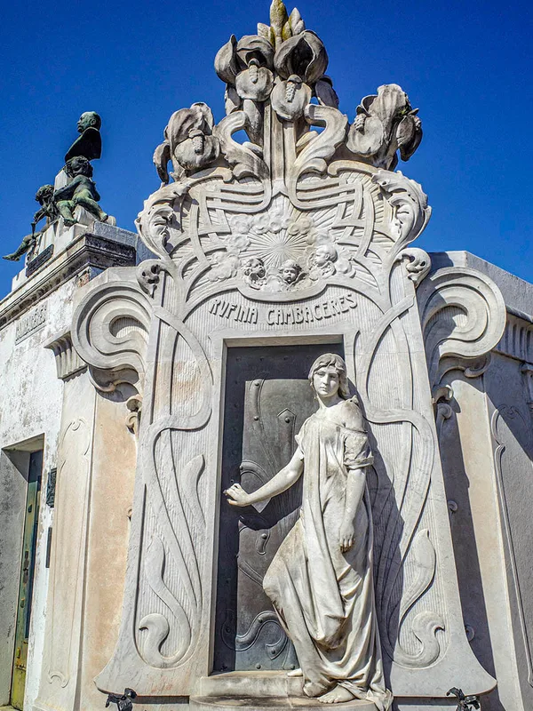
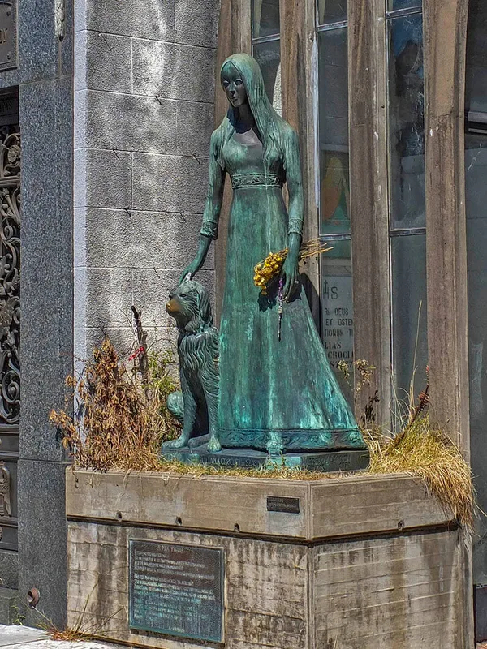
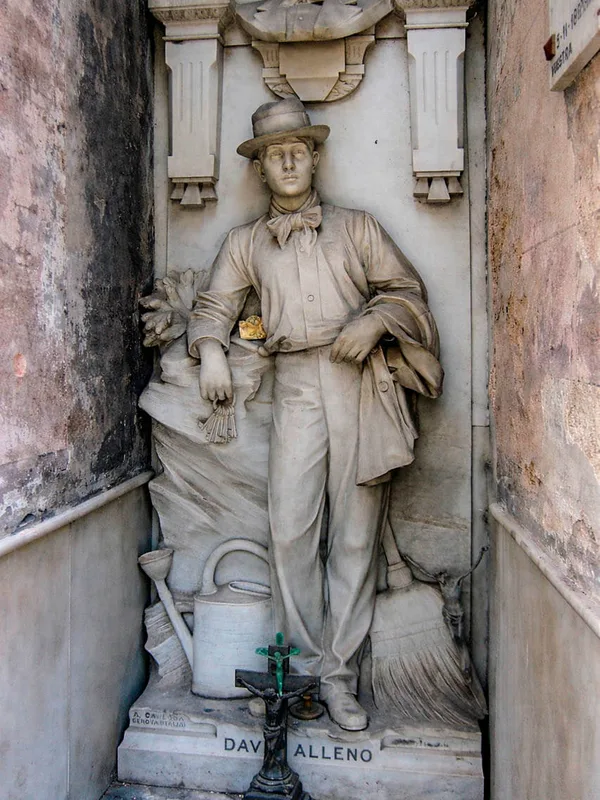

Tous les cimetières ont leurs histoires ; celles de Recoleta ont une adresse. Une jeune fille qui se réveille dans son cercueil. Une mariée emportée par une avalanche, debout en bronze avec son chien. Un gardien qui a économisé trente ans pour reposer parmi les présidents autour desquels il passait le balai. Une dame en blanc qui emprunte des vestes. On les raconte dans les allées tous les jours, chaque guide à sa façon, dans des versions légèrement différentes — et presque toujours comme des faits.
Cette page fait ce que les allées ne font pas : elle sépare les documents du récit. Pour chaque légende, vous trouverez ce que disent les archives, ce que disent les guides, comment reconnaître la tombe et où elle se trouve, à peu près. Les histoires elles-mêmes — racontées comme elles le méritent, devant la porte — sont trois des 22 étapes de l'audioguide TouringBee, qui les relie en un seul parcours hors ligne pour que vous ne passiez pas une demi-heure à chercher le gardien.
Vous cherchez toute la distribution plutôt que les légendes ? Commencez par qui repose à Recoleta ; cette page s'arrête sur les quatre tombes que l'on vient voir à cause d'une histoire.
Les légendes en bref
| Tombe | La légende | Ce qu'on sait | Comment la trouver |
|---|---|---|---|
| Rufina Cambaceres (1883–1902) | Déclarée morte à 19 ans, réveillée dans son cercueil | Morte le jour de ses 19 ans, en 1902 ; le reste n'est consigné nulle part | Marbre Art nouveau ; une jeune femme devant une porte entrouverte, la main sur la poignée |
| Liliana Crociati (1944–1970) | Emportée par une avalanche pendant son voyage de noces ; son chien est mort à la même heure | Avalanche en Autriche, 1970 ; les dates racontent autre chose | Chapelle néogothique ; jeune femme de bronze en robe de mariée, un chien à ses pieds |
| David Alleno (gardien 1881–1910) | S'est tiré une balle le jour où sa tombe a été terminée | Gardien 1881–1910 ; mort en 1915, circonstances inconnues | Homme de marbre grandeur nature en tenue de travail, avec clés, balai et arrosoir |
| Luz María García Velloso (1910–1925) | La Dame en blanc qui emprunte une veste | Morte à 15 ans en 1925 ; le conte est plus vieux qu'elle | Jeune fille de marbre allongée, robe blanche, des fleurs entre les mains |
| Les chats | Les gardiens des âmes | Une colonie nourrie par des bénévoles, aujourd'hui bien réduite | Sur une coupole, au soleil, sans vous regarder |
Rufina, Liliana et David Alleno sont des étapes du parcours audio TouringBee, qui compte 22 étapes à travers le cimetière : ~1 h 30, carte hors ligne, dès €9.99. Obtenir l'audioguide →
1. Rufina Cambaceres : la jeune fille à la porte

Les documents. Rufina naît le 31 mai 1883, fille d'Eugenio Cambaceres — romancier, homme politique, l'un des hommes les plus riches du pays — et de Luisa Bacichi, danseuse italienne. Son père meurt quand elle a quatre ans. Elle meurt le 31 mai 1902, le jour de ses dix-neuf ans, dans la maison familiale ; trois médecins certifient une cause cardiaque, et elle est inhumée le lendemain dans le caveau familial. Sa mère commande plus tard la tombe que vous voyez : marbre de Carrare, pur Art nouveau, des iris qui grimpent le long de l'encadrement, et Rufina elle-même devant une porte entrouverte, une main sur la poignée, comme sur le point de sortir. La sculpture est signée Richard Aigner.
Ce qu'on raconte. Qu'elle était en réalité dans un coma cataleptique ; que le gardien a entendu des bruits la nuit suivant l'enterrement ; que le cercueil avait bougé et que le couvercle, et son visage, portaient des griffures faites de l'intérieur. Certaines versions la font s'habiller pour une soirée au Teatro Colón, d'autres s'effondrer en apprenant un secret de famille. La sculpture, avec sa main tendue vers la porte, est lue comme l'aveu de sa mère.
Où les deux se séparent. Aucun document d'époque ne mentionne un cercueil rouvert ; la version de l'inhumation prématurée apparaît dans la presse des décennies plus tard, et elle appartient à toute une famille d'histoires semblables, nées à une époque véritablement terrifiée par la catalepsie. Les versions qui l'envoient au Teatro Colón ne tiennent pas : l'ancien théâtre avait fermé en 1888 et le nouveau a ouvert en 1908, six ans après sa mort. Le folklore emprunte des décors prestigieux et arrange les dates. Ce qui est vrai, c'est que la tombe est hors du commun et qu'une jeune fille qui touche une porte ressemble à quelqu'un qui va l'ouvrir. L'art ne prouve pas la légende ; il la maintient en vie. Les deux explications rivales de son malaise ce soir-là — et le nom que l'une d'elles implique — sont racontées devant la tombe sur le parcours audio.
Pour la trouver. À l'écart des grandes avenues, dans les allées latérales plutôt que sur l'axe qui va de l'entrée au Christ central ; les iris sculptés de l'encadrement se repèrent depuis le bout de l'allée. Sur le parcours audio, c'est l'étape 8, juste après Liliana et avant Evita.
2. Liliana Crociati et Sabú

Les documents. Liliana Crociati de Szászak a 26 ans quand une avalanche frappe l'hôtel où elle séjourne à Zürs am Arlberg, dans les Alpes autrichiennes, le 26 février 1970. Son mari, János Szászak, survit ; elle non. Ils s'étaient mariés en octobre 1966. Ses parents font construire la tombe : une petite chapelle néogothique dessinée par sa mère, avec de hautes fenêtres pour que l'intérieur ne soit pas sombre, et devant, un bronze grandeur nature de Liliana en robe de mariée, du sculpteur Wífredo Viladrich. Le chien à ses pieds est Sabú, son propre chien, ajouté plus tard.
Ce qu'on raconte. Qu'elle était en voyage de noces. Que Sabú est mort à Buenos Aires à l'heure même de l'avalanche, de chagrin. Que frotter son museau exauce un vœu — d'où son éclat doré sur le bronze sombre.
Où les deux se séparent. Le voyage de noces est un raccourci qui comprime trois ans et demi de mariage en un mélodrame ; les dates, elles, ne font aucun doute. Sabú est mort plusieurs années après Liliana, et sa statue a été commandée à ce moment-là, ce qui explique qu'elle et lui aient été coulés séparément. Le museau est réel et il est réellement poli par des milliers de mains ; personne ne tient de statistiques sur les vœux. Pourquoi sa mère a choisi une robe de mariée pour la statue, et ce qui est peint à l'intérieur de la chapelle : c'est sur le parcours audio.
Pour la trouver. C'est l'une des très rares tombes de Recoleta où une femme de bronze se tient hors de l'architecture ; une fois dans la bonne allée, impossible de la rater. Le problème, c'est l'allée. Sur le parcours audio, c'est l'étape 7, entre l'amiral Brown et Rufina.
3. David Alleno : le gardien qui a acheté sa place

Les documents. David Alleno, issu d'une famille d'immigrés italiens, a travaillé comme cuidador — gardien, fossoyeur, balayeur — à Recoleta de 1881 à 1910. Pendant la plus grande partie de cette période, il a économisé pour acheter ce que ses employeurs possédaient : une parcelle à lui, ici. Avec ses économies et une part du gain de loterie d'un frère, il achète une petite parcelle et se rend à Gênes, où le sculpteur Achille Canessa le taille grandeur nature dans le marbre de Carrare, en tenue de travail, avec un trousseau de clés, un balai et un arrosoir. L'inscription dit simplement cuidador de este cementerio, 1881–1910. Il meurt le 31 août 1915.
Ce qu'on raconte. Que le jour où la statue a été installée, il a démissionné, est rentré chez lui et s'est tiré une balle, incapable d'attendre la tombe pour laquelle il avait travaillé trente ans. Certains ajoutent qu'on entend son balai la nuit.
Où les deux se séparent. Il a pris sa retraite en 1910 et il est mort en 1915 ; le « même jour » ne tient donc pas. Son acte de décès mentionne une blessure à la tête sans l'expliquer, et les chercheurs qui ont dépouillé les archives n'ont rien trouvé de plus ; le suicide est possible et non documenté. Ce qui est documenté est déjà assez remarquable : un homme qui a balayé ces allées pendant près de trente ans et a fini sculpté grandeur nature, balai en main, parmi les généraux et les présidents autour desquels il travaillait. Ce qu'il a dit à ses employeurs à l'arrivée de la statue — dans la version que les guides adorent — est une étape du parcours.
Pour la trouver. C'est celle qui coûte une demi-heure aux visiteurs. Il se tient dans une allée étroite, loin des grandes avenues, grandeur nature sur un socle bas, facile à dépasser sans le voir ; c'est le balai qu'il faut chercher. Sur le parcours audio, c'est l'étape 12, après Evita et avant le boxeur Firpo — et la carte le signale, ce qui est en grande partie la raison d'être du parcours.

Écoutez les histoires devant les tombes elles-mêmes
22 étapes · ~1 h 30 · carte hors ligne — dès €9.99, un seul paiement, sans abonnement.
Obtenir l'audioguide4. La Dame en blanc
Les documents. Luz María García Velloso, fille du dramaturge Enrique García Velloso, meurt d'une leucémie en 1925, à quinze ans. Sa tombe la montre allongée sur la dalle, en robe blanche, des fleurs entre les mains : l'une des sculptures les plus tendres du cimetière.
Ce qu'on raconte. Sa mère, dit-on, aurait obtenu la permission de passer des nuits dans le caveau. Puis vient le conte proprement dit : un jeune homme rencontre, la nuit, une jeune fille en blanc qui pleure près de l'entrée du cimetière. Il lui prête sa veste, l'emmène boire un verre dans un café de la place ; elle dit s'appeler Luz María et s'enfuit vers la grille. Le lendemain, il la cherche à l'intérieur et retrouve la veste posée sur une jeune fille de marbre qui a son visage.
Où les deux se séparent. C'est le conte de « l'auto-stoppeuse fantôme », raconté sous une forme ou une autre à propos de cimetières de Mexico à Manille ; à Buenos Aires, il s'est fixé sur la tombe de jeune fille la plus touchante qu'il ait pu trouver. Certains journaux racontent la même histoire à propos de Rufina. Cela ne prouve rien sur Luz María et tout sur la façon dont les légendes choisissent leur domicile. Elle n'est pas sur le parcours audio ; la tombe vaut d'être trouvée pour la sculpture seule.
Pour la trouver. Pas sur le parcours audio. Cherchez une figure allongée plutôt que debout — une jeune fille couchée sur la dalle de la tombe — ou demandez « Luz María » à un gardien ; ils la connaissent tous.
5. Les chats
Les documents. À partir des années 1990, Recoleta a abrité une colonie de chats, plusieurs dizaines à son apogée, nourris et soignés par un groupe de bénévoles qui venaient chaque jour avec de la nourriture et des médicaments. Ils dormaient sur les toits des mausolées, posaient pour chaque photographe et faisaient autant partie de la carte postale que les anges. Ces dernières années, la colonie a été volontairement réduite par la stérilisation et l'adoption. Dans les vidéos et récits de visiteurs récents, croiser un chat est décrit comme une chance plutôt que comme une évidence : au lieu des dizaines d'autrefois, on en remarque généralement quelques-uns seulement.
Ce qu'on raconte. Qu'ils sont les gardiens des âmes, ou les âmes elles-mêmes ; qu'un chat assis sur une tombe signifie que son occupant repose en paix.
Où les deux se séparent. Ce sont des chats. Mais la première fois que vous en voyez un endormi sur une coupole dans la lumière de 9 h, le marbre encore froid et personne dans l'allée, l'histoire prend un certain sens. Ne les nourrissez pas ; les bénévoles gèrent leur alimentation, et le but de la politique actuelle est une petite colonie en bonne santé plutôt qu'une grande colonie affamée.
Ce qu'on raconte aussi dans les allées
- Le Nostradamus argentin. Benjamín Solari Parravicini (1898–1974), peintre, auteur de « psychographies » que ses admirateurs lisent comme des prédictions de la télévision, du premier pas sur la Lune et de bien d'autres choses. Sa tombe modeste est la dernière étape du parcours audio, et son histoire le clôt.
- Des portes qui ne ferment pas. Plusieurs caveaux ont des portes entrouvertes ou des vitres à travers lesquelles on aperçoit un escalier en colimaçon qui descend vers les cercueils. Rien de surnaturel : les caveaux de Recoleta s'enfoncent de deux ou trois niveaux, et certains sont en mauvais état ou ne sont plus entretenus par une famille. C'est l'une des visions les plus troublantes du cimetière, et elle est tout à fait réelle.
- Le corps d'Evita. Pas une légende, même si cela y ressemble : embaumé, volé, caché à l'étranger sous un faux nom pendant seize ans, rapatrié et inhumé ici sous des plaques d'acier. Il a sa propre page.
De ma propre visite
Je suis venu pour les grands noms et je suis reparti en pensant aux histoires. Ce que personne ne vous dit, c'est à quel point tout est proche : la porte de Rufina, avec ses iris et la main de la jeune fille, est dans une allée que la plupart des gens longent sans la voir en revenant vers la sortie. La chapelle de Liliana ressemble si peu à tout ce qui l'entoure qu'on a l'impression d'avoir changé de cimetière. Et David Alleno m'a coûté trente minutes — j'avais un plan papier, les allées se ressemblent toutes, et sa statue est plus petite que la légende. Quand je l'ai enfin trouvé, balai en main, un chat dormait sur le caveau d'en face. Cette demi-heure explique pourquoi l'audioguide a une carte avec les étapes déjà placées.
Un mot sur la façon de raconter ces histoires
Ce sont des personnes réelles, pas des personnages d'histoire de fantômes, et ce cimetière est en activité. Les histoires font partie de ce qui fait aimer Recoleta, et il n'y a aucun mal à les raconter — tant qu'on les raconte comme des histoires, à voix basse, et que personne ne s'appuie sur une porte pour une photo. Les bons guides tracent eux-mêmes la ligne entre documents et légende. L'audio aussi.
Audioguide du cimetière de RecoletaAccès immédiat
- 100 % hors ligne — ni Wi-Fi ni données mobiles nécessaires dans le cimetière
- Carte hors ligne avec le parcours — vous lancez chaque récit vous-même, devant la tombe
- Langues de l'audio : anglais, espagnol
- Fonctionne sur iOS & Android
- 22 étapes, environ 1–2 heures à votre rythme
À retenir
Rufina est morte le jour de son anniversaire et a été sculptée à sa porte ; le reste est une histoire. Liliana est morte dans une avalanche trois ans après son mariage ; le chien est venu plus tard. Le gardien a acheté sa place parmi les généraux et il est mort cinq ans plus tard, de cause inconnue. La Dame en blanc est un conte qui s'est trouvé une tombe. Les chats sont des chats. Chacune de ces phrases est plus intéressante que la légende qu'elle corrige — et les quatre tombes font toujours une belle promenade de légendes à travers Recoleta.
Écoutez les histoires devant les portes, dans l'ordre, avec l'itinéraire déjà tracé : Obtenir l'audioguide — 22 étapes · hors ligne · €9.99
Questions fréquentes
Rufina Cambaceres a-t-elle vraiment été enterrée vivante ?
Rien ne le documente. Ce qui est certain : elle est morte le 31 mai 1902, le jour de ses dix-neuf ans, trois médecins ont certifié une cause cardiaque, et sa mère a commandé une tombe Art nouveau avec Rufina sculptée à la porte. Le cercueil déplacé, les griffures et la catalepsie forment une histoire apparue plus tard, sans aucune source d'époque.
Liliana Crociati est-elle morte pendant son voyage de noces ?
Non. Liliana a épousé János Szászak en 1966 et elle est morte dans une avalanche à Zürs am Arlberg, en Autriche, le 26 février 1970 — plus de trois ans plus tard. Le détail du voyage de noces est un ajout du récit. Son chien Sabú n'est pas mort le même jour non plus ; il est mort des années plus tard et sa statue a été ajoutée ensuite.
Le gardien David Alleno s'est-il suicidé quand sa tombe a été terminée ?
Rien ne le prouve. Alleno a travaillé au cimetière de 1881 à 1910 et s'est fait faire à Gênes une statue de marbre grandeur nature. Il est mort en 1915 — cinq ans après sa retraite — et son acte de décès indique une blessure à la tête sans dire comment elle est survenue. Le suicide est la version des guides, pas celle des documents.
Qui est la Dame en blanc de Recoleta ?
La plupart des versions nomment Luz María García Velloso, fille d'un dramaturge, morte d'une leucémie en 1925 à quinze ans et sculptée allongée sur sa tombe. L'histoire du jeune homme qui prête sa veste à une jeune fille en larmes et la retrouve sur sa tombe le lendemain matin est un conte de fantômes classique, raconté à propos de plusieurs cimetières ; à Buenos Aires, il s'est posé sur elle.
Y a-t-il encore des chats au cimetière de Recoleta ?
Quelques-uns. La colonie qui comptait autrefois des dizaines de chats, nourris par des bénévoles depuis les années 1990, a été volontairement réduite par la stérilisation et l'adoption ; dans les vidéos de visiteurs récentes, croiser un chat est une chance, pas une certitude. Merci de ne pas les nourrir.
L'audioguide raconte-t-il ces histoires ?
Oui — Rufina, Liliana, David Alleno et le « Nostradamus argentin » Solari Parravicini sont quatre des 22 étapes, racontées en entier devant les tombes, avec l'itinéraire qui les relie sur une carte hors ligne.
Poursuivre la visite
Certains liens de cette page sont des liens d'affiliation (GetYourGuide, Booking.com, TouringBee). Si vous réservez via ces liens, nous pouvons toucher une petite commission — sans surcoût pour vous. Cela n'influence jamais nos recommandations. Voir notre Information sur l'affiliation.